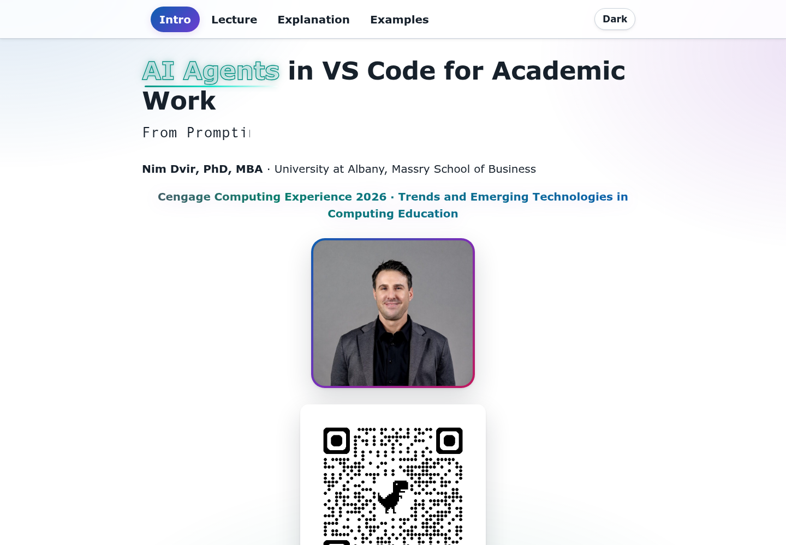
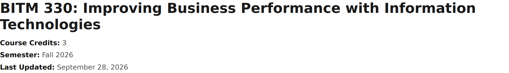
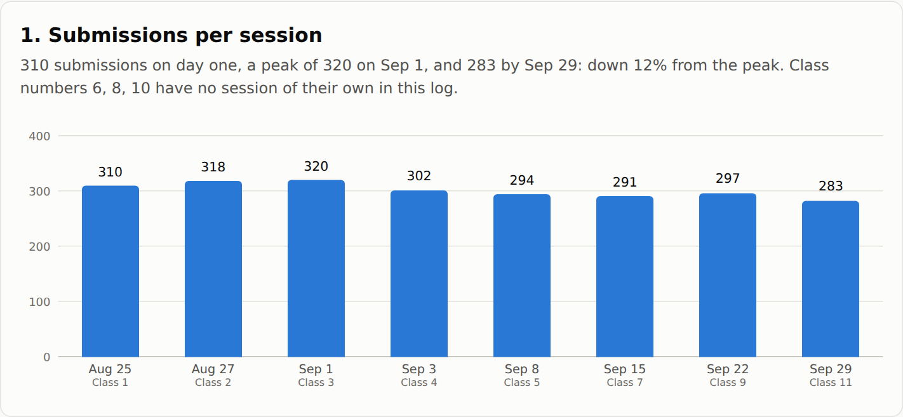
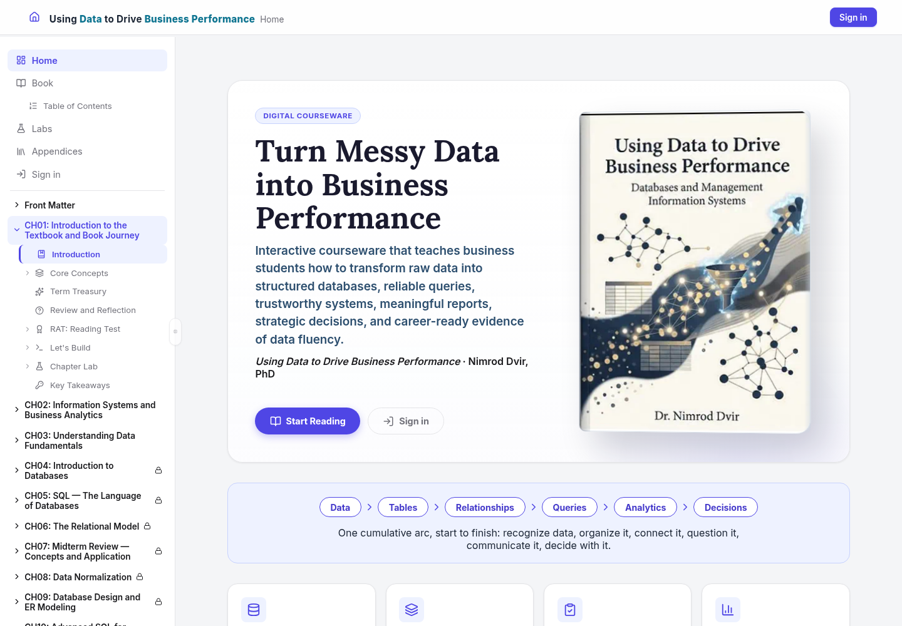
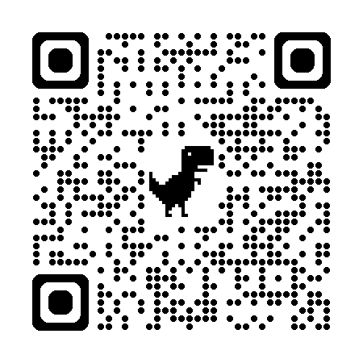

Examples
Four projects I finished with an agent. Each one starts with the result. Open the walkthrough if you want to see the prompts I used, the steps, and what I checked.
During the session: keep this page open. Results and walkthroughs open in a new tab, so you can always come back here. I prepared every project ahead of time. If we do anything live, it will be one small change.
-
From outline to conference website
A lecture outline becomes Markdown pages, the pages become HTML, and GitHub Pages puts them online.
- Outline the pages and the order you'll teach them in.
- Ask the agent to draft the pages and build the site.
- Read what it made, fix what's wrong, then publish.

Prepared screenshot of the finished result. Click to enlarge. What this teaches: The agent builds the pages. Your outline and your review decide what they say.
-
From Word syllabus to HTML
An older Word syllabus becomes a web page you can navigate. The content changes get reviewed separately from the formatting.
- Look at the Word file and keep its content intact.
- Build the web layout, then review what changed for the new semester.
- Check the dates, the grading weights, and the links.

Prepared screenshot of the finished result. Click to enlarge. What this teaches: Converting a document doesn't check it. You still have to read it.
-
One dataset, two AI analyses
Claude and DeepSeek each analyzed the same BITM 330 form export. Their reports and charts sit side by side, so you can see where they made different choices.
- Say what the task is, which file to use, and what counts as one row.
- Open both reports and compare the charts on the same question.
- Check how each one grouped the answers and what it divided by.

Prepared screenshot of the Claude session chart; both reports are linked below. Click to enlarge. What this teaches: Two AIs can get different numbers from the same data. Ask how each number was counted.
-
Building interactive courseware
A look at how the live courseware is put together: the chapters, the reader, student accounts, and hosting.
- Organize the chapter and lab files.
- Connect the reader, the accounts, and the build.
- Review each change, then deploy through Vercel.

Prepared screenshot of the finished result. Click to enlarge. What this teaches: A big project is the same routine repeated: one small task, then a review.
What to try first
- Pick a small task where you'll know when it's done.
- Open the files it needs and tell the agent what it's allowed to change.
- Ask for a plan first. Check the result. If the prompt worked, save it.
Other applications
The same routine works for lecture materials, course redesign, research coding, document conversion, and any file chore you repeat. Start with one small task and check the result before you take on more.
Resources
Presentation
This project
- Setup guide
- Public CCE repository
- Each walkthrough links to its saved prompts and files.
GitHub and VS Code
- GitHub Copilot setup: Set up GitHub Copilot in VS Code
- VS Code download: code.visualstudio.com/download
- Copilot documentation: Copilot Chat overview
- VS Code agent guides: Introduction to agent-first development · Reviewing and controlling agent changes · Using tools with agents
Beyond Copilot
- Model documentation: Changing the AI model for Copilot Chat
- Other agents in VS Code: Using third-party agents in VS Code
- MCP: Extending agents with MCP servers
- Extensions: Agent plugins
Stay in touch
Nim Dvir · University at Albany · nimdvir.com · LinkedIn · GitHub

Next → Stay in touch